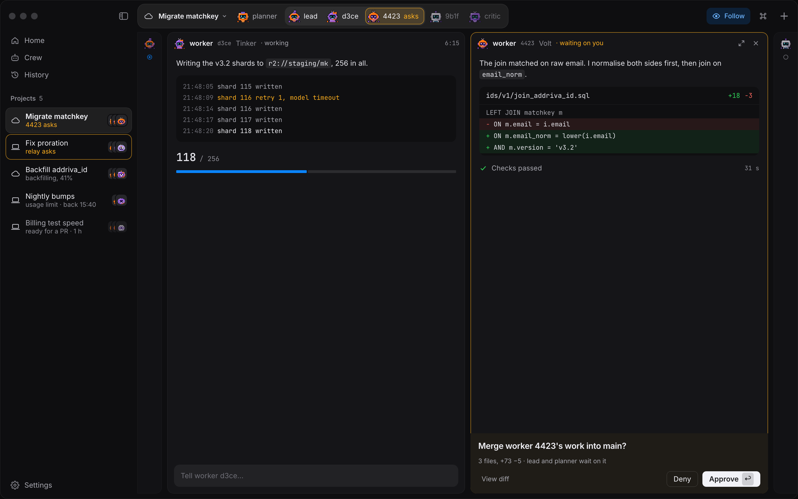
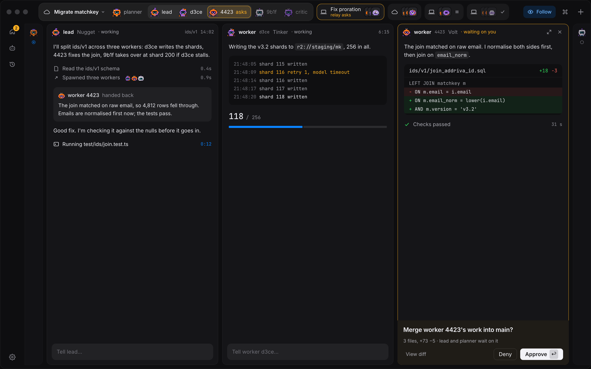
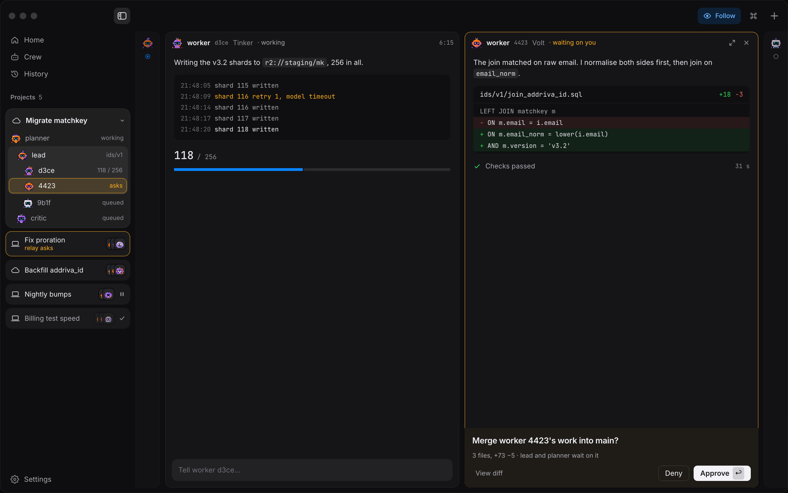

Today the window has no sidebar: one project open, the others folded into decks in the title bar. Each variant below gives the app's places (Home, Crew, History, Settings) a home, and says what happens to the decks. Same window as Reel.png, same five projects: two asking, one running in the cloud, one paused at a usage limit, one finished.



| Projects live in | The sidebar, two lines each, always | The title bar, as decks (approved) | Decks folded; the sidebar open, as stacked decks |
|---|---|---|---|
| Leaves the title bar | Every deck and Home | Home only | Folded: Home. Open: the decks and the crew tabs |
| Reel at 1440 pt | 2 columns (sidebar shown) · 3 hidden | 3 columns (417 pt each, −20) | 3 columns folded · 2 open |
| Layout cost | One reel relayout per toggle, at rest | None: fixed rail, labels are an overlay | Folded none; one relayout per fold, at rest |
| Asks you can see | In the sidebar; hidden → a count on its toggle | Decks (amber ring) + a count on Home | Decks or rows, always; crew asks in the list |
| Discoverability | Best: every place named | Weakest: icons, tooltips, hover labels | Good: named when open, icons when folded |
| 20 projects | Scrolls, filters, finished fold | Approved overflow: names drop, then +n | Opens into the list; +n opens it |
| Crew (profiles) gets | A named place in the list | A rail button | A rail button, a named place when open |
| Against approved decisions | Reverses the decks (flagged) | Nothing reversed | Folded nothing; open, crew tabs move |
| Build | Medium: new list, drop decks | Small: rail + overlay | Largest: B + list + the fold motion |
Folded, C is B: the approved Reel mode untouched, three columns, and one 60 pt rail that finally gives Crew, History and Settings a place. Opened (⌃⌘S), it becomes the list the decks can't be: twenty projects with live state, the open crew as a tree that scales to a swarm. The reel never reflows while scrolling; a fold costs one layout at rest. The price is two renderings of the projects (decks and rows) and of the crew (tabs and tree) to keep in step, so ship it in two steps: B first (small, reverses nothing), then the sidebar when people keep more projects than the title bar holds.